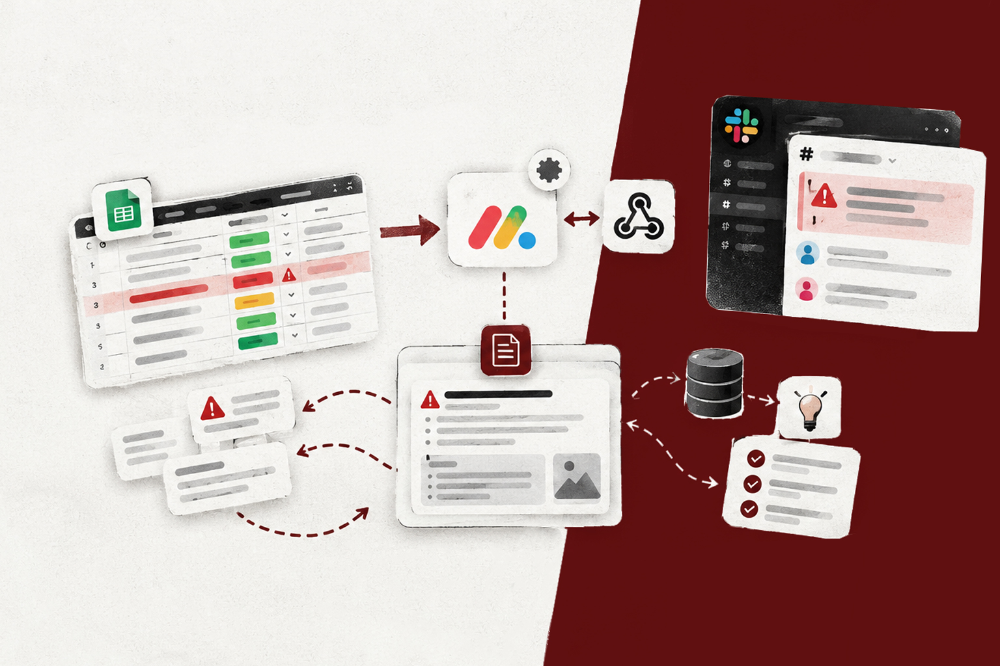
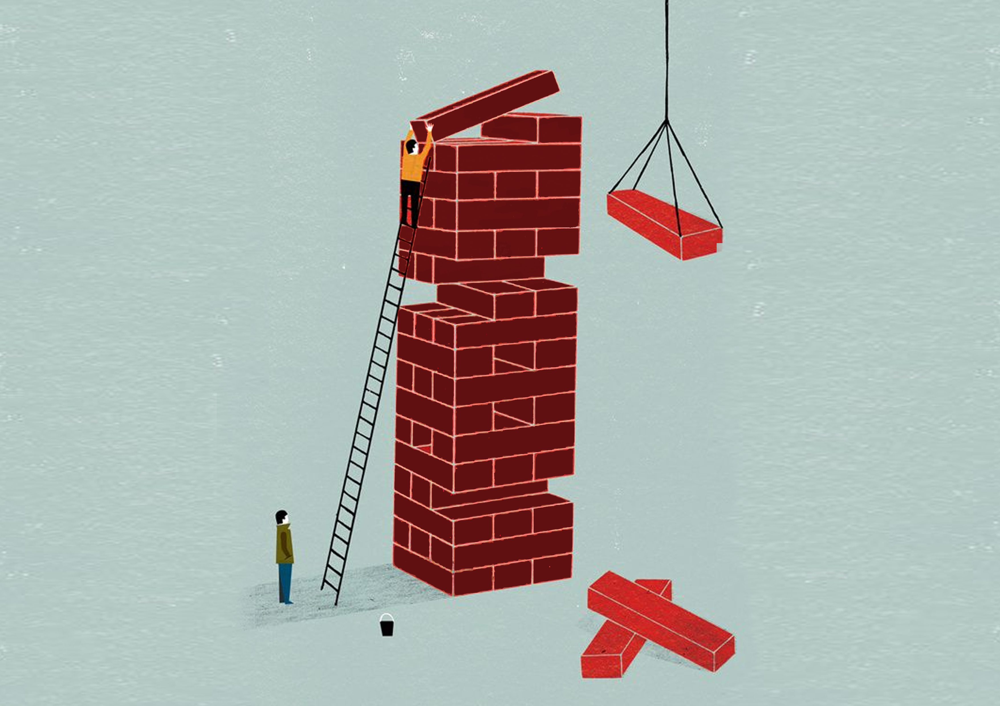

Comment anticiper les blocages et fiabiliser le suivi des projets ?
J’ai conçu OpsBoard pour rendre les blocages visibles, automatiser les alertes et capitaliser les solutions.
Je transforme des besoins métiers en processus, outils et solutions opérationnelles.

Interrogez mon assistant sur mon expérience, mes compétences, ma manière de travailler ou mon adéquation avec votre poste.
Posez votre question en français ou en anglais. Mon assistant vous répondra dans la langue de votre choix.
Ses réponses s’appuient uniquement sur mon expérience, mes projets et les informations que j’ai validées.
Par exemple : « Est il à l’aise avec des sujets financiers ? » ou « How does Younes handle disagreement with a manager? »
L’assistant répond à partir d’informations professionnelles fournies et validées par Younes.
Des problèmes concrets. Des réponses construites. Des outils choisis pour les mettre en œuvre.

J’ai conçu OpsBoard pour rendre les blocages visibles, automatiser les alertes et capitaliser les solutions.

J’ai centralisé l’information, formalisé les processus et rendu l’exécution plus lisible et reproductible.

J’ai conçu un système de chiffrage qui centralise les coûts, applique les règles de calcul et génère les devis.

Dans le cadre du projet Honda au Mondial de l’Auto 2026, j’ai structuré la logistique, la coordination d’équipe et le suivi opérationnel du projet.
Je travaille entre analyse, opérations et environnements techniques. J’aime comprendre rapidement un besoin, structurer ce qui bloque et construire une réponse concrète.
Mon parcours m’a progressivement amené de la gestion et de l’analyse en environnement corporate vers la création d’entreprise, puis vers un rôle opérationnel au sein d’une startup.

Responsable opérationnel / Chief of Staff en alternance. Prise en charge de sujets opérationnels, RH, financiers, administratifs et juridiques, structuration des processus et automatisation.

Master 1 · Économie des Marchés et des Entreprises · 2024 à 2025 Master 2 · Spécialisation en Création d’Entreprise, en alternance · 2025 à 2026 Diplôme obtenu en octobre 2026

Sept. 2021 à Fév. 2024. Gestion de portefeuille, retraite et investissement. Responsable du produit Power Plan.
Je me forme rapidement aux outils utiles au problème. L’IA, le scripting et l’automatisation sont des leviers pour construire des solutions plus efficaces, pas une finalité.
Mon expérience peut notamment s’inscrire dans les fonctions suivantes.
Pour aller au delà du portfolio. Pour mieux comprendre comment je peux contribuer à vos projets. Ou simplement échanger sur une opportunité.